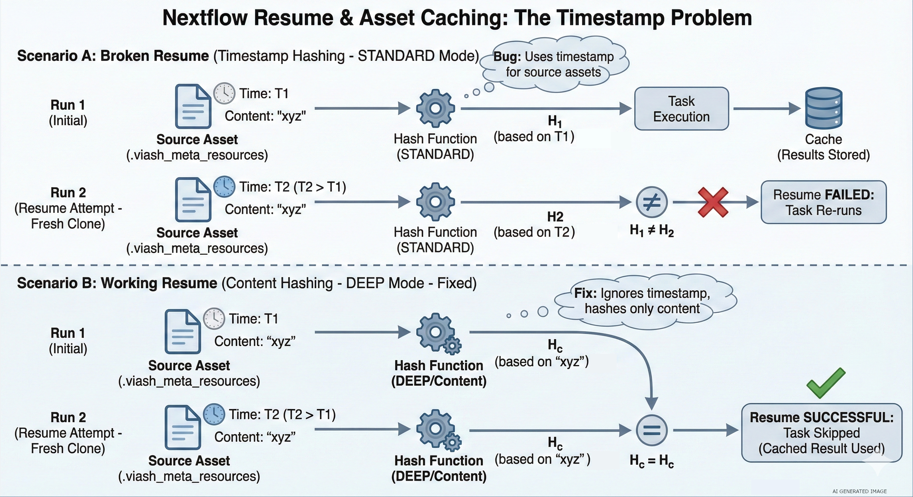

At Data Intuitive, we deploy data workflows at scale using Viash, a framework that allows us to build reusable Nextflow modules and an accompanying Docker container from scripts and a standardized metadata file.
At the beginning of May, we began receiving reports that some of the OpenPipeline workflows deployed at our customers were unable to be resumed. The ability to resume a workflow is critical when handling large amounts of data because it saves cost and time, for example, when recovering from an infrastructure outage or re-analyzing data with slightly different parameters.
We investigated and uncovered two bugs in Nextflow’s caching mechanism (#6112 and #6604) specifically related to source code assets. Here is the full breakdown of how we debugged it.
How Nextflow Caching Works
Nextflow’s caching mechanism works by creating a checksum (also called a task hash) for each executed task based on different pieces of (meta-)data available for the process.
When a workflow is resumed, the hashes from the current run are compared to the hashes of previously executed tasks. If there is a match, the task can be skipped if the previous results are available in the work directory.
Therefore, there are two strict requirements for a resume:
- Task hashes must match exactly.
- Results must be available at the correct location (the work directory).
When a workflow fails to cache, it usually means there is a source of unintended variance between runs.
Phase 1: Eliminating Basic Variance
Debugging involves stripping away variation until the underlying issue is exposed. Before diving deep, we checked the basics:
- Input Data: We verified that input data had not changed. We created a smaller test dataset to replicate the failure and perform faster test runs.
- Nextflow Version: Different versions calculate hashes differently. We pinned the version using the NXF_VER environment variable (e.g., export NXF_VER=v25.10.2 in the pre-run script) to ensure both the base run and resume run used the exact same logic.
- Workflow Code: If the processing code changes, the hash should change. We ensured we were using a static commit, avoiding floating git tags or main branch references.
Phase 2: Digging into the Hashes
In this specific case, all the above checked out, yet the resume failed. We needed to see exactly what Nextflow was hashing.
We enabled debug output. On the CLI, this is done via -dump-hashes; on Seqera Platform, we added dumpHashes = true to the Nextflow configuration. This outputs the task hash and the entries used to build it.
The output revealed the mismatch:
nextflow.processor.TaskProcessor - [process_samples:run_wf:add_id:processWf:add_id_process (2)] cache hash: 052f66253c5cf344c8f4cd6de1eca673; mode: STANDARD; entries:
ec7378cb... [java.util.UUID] a2687fce-acf7-4e87-b649-d3c5273ba0a2
39b48d5b... [java.lang.String] process_samples:run_wf:add_id:processWf:add_id_process
...
29526141... [java.lang.String] resourcesDir
c5fde678... [nextflow.util.ArrayBag] [FileHolder(sourceObj:.../.viash_meta_resources, ...)]
...
16fe7483... [java.lang.Boolean] trueWhen comparing the hashes of two processes, the entry for .viash_meta_resources was different. This directory is a feature of Viash that allows introspection of properties (process name, arguments, static source files, etc.). However, this meta information is static and part of the source code—it should not change between runs.
We listed the contents of the directory to be sure:
total 360
-rw-r--r--. 1 6890 .config.vsh.yaml
-rw-r--r--. 1 143399 main.nf
-rw-r--r--. 1 4147 nextflow.config
-rw-r--r--. 1 2238 nextflow_labels.config
-rw-r--r--. 1 344 nextflow_params.yaml
-rw-r--r--. 1 4211 nextflow_schema.json
-rw-r--r--. 1 371 setup_logger.pyBy manually calculating a checksum of the two .viash_meta_resources directories directly from storage, we confirmed that the directories were identical. This raised the suspicion that we needed to look at the internals of Nextflow itself.
Phase 3: Root Cause Analysis
Nextflow’s caching operates in three modes, determined by the process.cache configuration:
- Standard (Default): Uses Filename + Size + Last Updated Timestamp.
- Lenient: Uses Filename + Size (ignores timestamp).
- Deep: Uses the actual File Content.
Crucially, Source Code Assets are treated differently. Nextflow ignores the configured caching mode and always uses the file’s contents (Deep caching) for the hash. This is because source code files are small, and hashing their content allows resuming across different versions or machines.
In Nextflow’s HashBuilder code, there is an isAssetFile switch used to identify files that are part of the git repository. Our .viash_meta_resources folder was in the source code, so it should have been deeply hashed.
To confirm why it wasn’t, we enabled trace debugging by exporting NXF_TRACE=nextflow.util. The logs revealed the smoking gun:
TRACE nextflow.util.HashBuilder - Hashing file meta: path=/scratch/.../metadata/add_id; size=2560, mode=STANDARDThe log showed mode=STANDARD. This method (hashFileMetadata) uses the file size and timestamp, not the content.

The Failure Logic
This final clue explained the behavior:
- Initial Run: The repo is fetched, and the workflow runs. The asset has a specific timestamp.
- Resume Run: On remote executors (like AWS Batch), a new clone of the repository is fetched.
- The Bug: Nextflow failed to recognize the item as a repository asset because it was in a subdirectory (not a sibling of main.nf).
- The Result: Because it didn’t see it as an asset, it defaulted to STANDARD hashing. Since it was a fresh clone, the timestamp changed, the hash changed, and the resume failed.
Phase 4: Reproduction and Solution
The need for a fresh clone explains why this was hard to reproduce locally (where repos persist in the user’s home directory). We replicated the issue locally using nextflow drop to clear the cache:
# Cleaning the environment
$ nextflow drop DriesSchaumont/nextflow-subfolder-basedir-asset-caching > /dev/null; rm -rf .nextflow && rm -f .nextflow.log* && rm -rf work
# Initial run
$ NXF_VER=25.10.0 NXF_TRACE=nextflow.util nextflow run DriesSchaumont/nextflow-subfolder-basedir-asset-caching -main-script pipeline/main.nf
# Removing the code assets to simulate fresh clone
$ nextflow drop DriesSchaumont/nextflow-subfolder-basedir-asset-caching
# Demonstrate resume functionality failing
$ NXF_VER=25.10.0 NXF_TRACE=nextflow.util nextflow run DriesSchaumont/nextflow-subfolder-basedir-asset-caching -main-script pipeline/main.nf -resumeInvestigating Nextflow’s caching is aided by eliminating sources of variation while enabling deep debugging via dumpHashes and NXF_TRACE. Creating a locally reproducible example is preferred, but not always feasible when the root cause is unclear.
Luckily, our customer graciously provided us with a test environment to investigate the issue. If you are interested in our proposed solution, you can find more information in the pull requests we’ve submitted to the Nextflow project (#6605 and #6113).